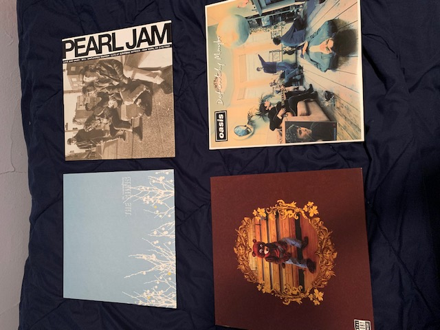

Music is one of the biggest parts of my life!
My favorite musicians:
- Pearl Jam
- Kanye West
- Kid Cudi
- Jimi Hendrix
- The Strokes
- The Shins
- The Smiths
- Weezer
- Radiohead
- Oasis
My favorite albums:
- Weezer (1994)
- College Dropout - Kanye West (2004)
- In Rainbows - Radiohead (2007)
- Definitely Maybe - Oasis (1994)
- Is This It? - The Strokes (2001)
- Ten - Pearl Jam (1991)
- Temple of the Dog (1991)
- Man on the moon - Kid Cudi (2009)
- Chutes Too Narrow - The Shins (2003)
- Death Race For Love - Juice WRLD (2019)
A few of my favorite records!

My favorite live performances: